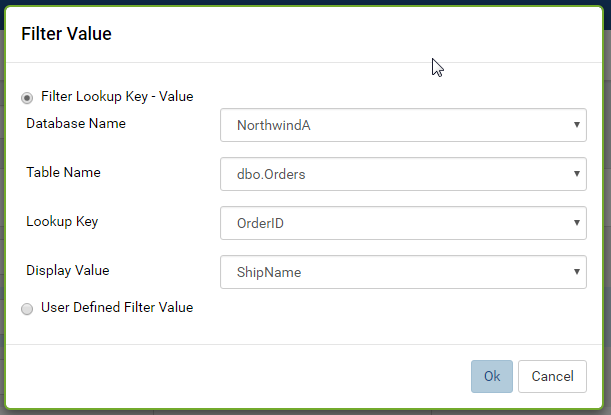

Data Model/Tables, Views and Stored Procedures¶
The Data Model/Tables, Data Model/Views and Data Model/Stored Procedures pages allow user to
- manage tables, views, their columns and relationships
- add and remove calculated fields
- manage stored procedures, their parameters, output columns and relationships
- assign filter values for stored procedure parameters
- mark stored procedures as dynamic
List tables, views or stored procedures¶
In browser, log in to Izenda as a user with Data Model permission.
Click Settings, then Data Setup then Data Model in the left menu.
Select the Setting Level: either System or a specific tenant.
Click Tables, Views or Stored Procedures in the Middle Panel. (Fig. 70)
Visible tables, views, or stored procedures from all connections will be displayed in the upper data source grid, and columns of the currently selected one will be displayed in the lower Column Grid. (Fig. 71)

Fig. 71 Data Model - Data Source Grid and Column Grid
By default, only the first page with 10 items are displayed. To see more, either use the next page icon

Fig. 72 Data Model - Next Page
or select a larger number in Items per page box.

Fig. 73 Data Model - Items per page
{kind=link}
Search for tables, views or stored procedures¶
The Search box at the top allows user to search for specific tables, views or stored procedures.

Fig. 74 Data Model - Search Tables or Views by element
Select a specific element to search for in the dropdown on the left of the Search box. Default is All. (Fig. 74)
Type a partial name and click the search icon (üîç).
Only the matching tables, views or stored procedures will be displayed.
Assign a category to a table, view or stored procedure¶
Select a name in the Category dropdown to assign it to the table, view or stored procedure.
If the category name is not yet in the list, user can add it by typing the name in and press Enter. (Fig. 75)
Continue to assign category to more tables, views or stored procedures in the same page.
Click Save button at the top, then click OK in the confirmation pop-up.
Note
User must save the assignments before moving to another page or another group in the Middle Panel.
{kind=link}
Assign an alias to a table, view or stored procedure¶
Enter an alias into the Database Source Alias box to assign it to the table, view or stored procedure.
Continue to assign alias to more tables, views or stored procedures in the same page.
The alias can contain any characters except for “[” and “]”.
Click Save button at the top, then click OK in the confirmation pop-up.
Note
User must save the assignments before moving to another page or another group in the Middle Panel.
Note
Within a category, the aliases cannot be duplicated. In Fig. 76, Alias_1 is duplicated because the data sources are in the same Category2, and Alias_2 is valid because the data sources are in different categories.
{kind=link}
Manage relationships for a table, view or stored procedure¶
- Click the relationhips icon at the end of each line to open the Relationships dialog.
- See Data Model/Relationships and Schema for how to manage relationships.
Assign an alias to a column in table, view or stored procedure¶
In the Column Grid, enter an alias into the Column Alias box to assign it to the column.
Continue to assign alias to more columns in the same page.
The alias can contain any characters except for “[” and “]”.
Click Save button at the top, then click OK in the confirmation pop-up.
Note
User must save the assignments before moving to another page or another group in the Middle Panel.
Note
Within a table or view, the aliases cannot be duplicated. (Fig. 77)
{kind=link}
Select visible or not for a column in table, view or stored procedure¶
A visible column will be included in any field selection control in report.
Untick the Visible check-box to exclude the column from field selection controls in report, or leave it checked to include.
Continue for more columns in the same page.
Click Save button at the top, then click OK in the confirmation pop-up.
Note
User must save the changes before moving to another page or another group in the Middle Panel.
Select filterable or not for a column in table, view or stored procedure¶
A filterable (and visible) column will be included in any filter in report.
Note
A not visible column will be excluded from any filter in report no matter it is filterable or not.
Untick the Filterable check-box to exclude the column from filters in report, or leave it checked to include.
Continue for more columns in the same page.
Click Save button at the top, then click OK in the confirmation pop-up.
Note
User must save the changes before moving to another page or another group in the Middle Panel.
Add a calculated field to table or view¶
Calculated field
Calculated field is a virtual field calculated from an expression that can use other fields in the same table or view. A calculated field is created to simplify the select queries by hiding the detailed formula, and the formula can be replaced without any change in existing queries. A calculated field will also avoid data redundancy since it is re-calculated in each query.
For example, from a student test score, the grade can be calculated by this formula:
WHEN score >= 0 AND score < 7 THEN 'GOOD'
WHEN score >= 7 AND score < 9 THEN 'EXCELLENT'
WHEN score >= 9 THEN 'OUTSTANDING'
If defined as a calculated field, the grade can later use another formula without changing any queries.
Note
Calculated fields cannot be used in relationships between tables or views.
See also
Select the table or view in the upper data source grid.
Click Add Field button on top of the Column Grid to open Add Calculated Field pop-up.
Enter the field name into Column Name box.
The field name must be unique in that table or view. (Fig. 78)
Enter the definition for the calculated field into Expression box.
Click the bulb icon (üí°) to see the list of available fields, functions and operators. Then click a field, function or operator to insert it into the cursor position. (Fig. 79)
Depending on the formula, a suitable data type is suggested in Data Type drop-down.
Click Preview button to see a sample result of the formula.
Click OK to accept the formula and close the pop-up. (Fig. 80)
Click Save at the top.
{kind=link}
{kind=link}
{kind=link}
Remove a calculated field from table or view¶
Select the table or view in the upper data source grid.
Click the remove icon (X) at the end of the calculated field.
The remove icon is only enabled for calculated fields. (Fig. 81)

Fig. 81 Data Model - Remove Calculated Field
Click OK in the confirmation pop-up.
If the calculated field has been used in any report, user will have to confirm that these reports will not be viewable anymore.
Click Save at the top.
Set stored procedure as dynamic¶
For stored procedures with any input parameter, they can be set as dynamic.
Dynamic stored procedure
A stored procedure with one (or more) input parameter might have different output schemas based on the value of that input parameter. The reports have 2 options to handle this situation:
- Dynamic: The schema is only determined at report design time by a user-supplied input value.
The schema is empty in Data Model.
- Non-dynamic: The schema is assumed to remain consistent regardless of the input value.
System can try getting that schema for Data Model by executing with null input parameters. In case it cannot because any parameter requires NOT NULL, user will be prompted for a proper input value.
The exact rule for NOT NULL input parameters:
- If Filter Value has been defined for a parameter, the first value in that list will be used as input value.
- If not, then null will be used as input value.
Non-dynamic should be the default value since in practice, well-coded stored procedures should return a consistent schema.
-
Tick the Dynamic check-box to set a stored procedure as dynamic.
Click OK in the confirmation pop-up. (Fig. 82)
Click Save button at the top, then click OK in the confirmation pop-up.
The stored procedure will be set as dynamic and its schema will be removed from the lower Column Grid. The Execute button is also disabled.
{kind=link}
Set stored procedure as non-dynamic¶
- Untick the Dynamic check-box to set a stored procedure as non-dynamic.
- Click Save button at the top, then click OK in the confirmation pop-up.
- The stored procedure will be set as non-dynamic. The Execute button is also enabled for user to get the schema.
Execute a non-dynamic stored procedure to get the schema¶
- Click the Execute button above the lower Column Grid.
- System tries running the stored procedure to get the schema.
- The schema will be populated into the lower Column Grid.
- Click Save button at the top, then click OK in the confirmation pop-up.
The action will fail if one of the parameters requires not null and Filter Value has not been defined.
In this case, please update the Filter Value section.
Update Filter Value for a stored procedure parameter¶
Click the icon in Filter Value box.
Filter Value icon only appears for parameters.
Select either Filter Lookup Key - Value or User Defined Filter Value
Example to set parameter @OrderID to look up from NorthwindA.dbo.Orders.OrderID, displaying column ShipName to end-user. (Fig. 83)
Fig. 83 Data Model - Filter Lookup Key - Value
Example to set parameter @OrderID to look up from a list of 3 values: the value of Tenant ID and 2 fixed values NewValueA and NewValueB. (Fig. 84)
-
The selected filter value will appear in the Filter Value box. (Fig. 85)
Click Save button at the top, then click OK in the confirmation pop-up.
{kind=link}
{kind=link}
{kind=link}